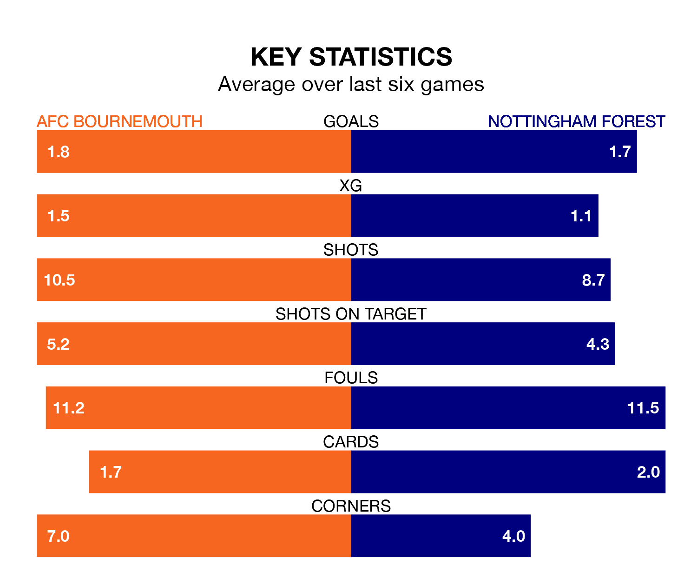

Nottingham Forest travel to AFC Bournemouth on early Sunday in the Premier League.
The visitors come into the game on the back of a defeat in their last match, having lost to Arsenal 2-1 at home, with a goal from Taiwo Awoniyi.
The Cherries, meanwhile, drew their last match, 1-1 against West Ham United, with their goal scored by Dominic Solanke.
In the last 10 years, Bournemouth and Forest have played each other on 10 occasions. Bournemouth won six of them, Forest two, and they drew twice.
On average, the Cherries scored 1.8 goals and the Tricky Trees 1.1 in those matches.
Their last meeting was on December 23, when Bournemouth won 3-2 away.
In Solanke-Mitchell, Bournemouth have one of the league's most on-form strikers so far this season. He has notched 13 goals in 21 appearances, to sit third in the scoring charts.
His goal rate of one every 144 minutes is slightly quicker than that of Chris Wood, Forest's top scorer with a goal every 108 minutes, and a total of eight goals in 20 games.
The Tricky Trees are 17th in the table after 22 games, of which they have won five and drawn five, earning 20 points.
The Cherries are four places ahead of the away team in 13th, with seven wins and five draws putting them on 26 points.
With 27 goals in 22 games so far this season, Forest are scoring at below the league average rate with 1.2 goals per game. And they are conceding more than average, letting in 40 goals at a rate of 1.8 per game.
The hosts are also below average scorers, with 1.4 goals per game, compared to a league average of 1.6. They have conceded 1.9 goals per game.
Bournemouth are in mixed form in the Premier League, with three wins and a draw from their last six games.
With two wins and four losses over that period, Forest's form is worse – they have taken six points from 18, compared to Bournemouth's 10.
Sunday's match will be refereed by Rebecca Welch, who has taken charge of one Premier League game so far this season, issuing no red cards and booking three players. He has not awarded any penalties.
He is yet to oversee a match featuring either Bournemouth or Forest this season.
Updated: 14:12 (UTC), 02/02/24